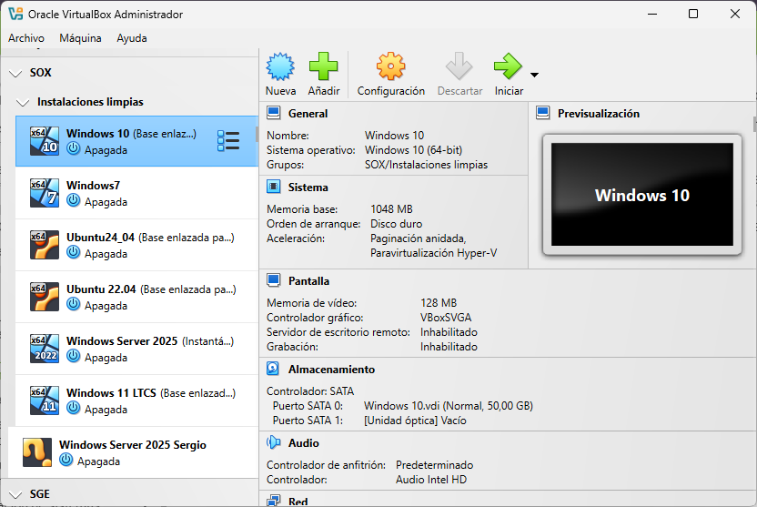
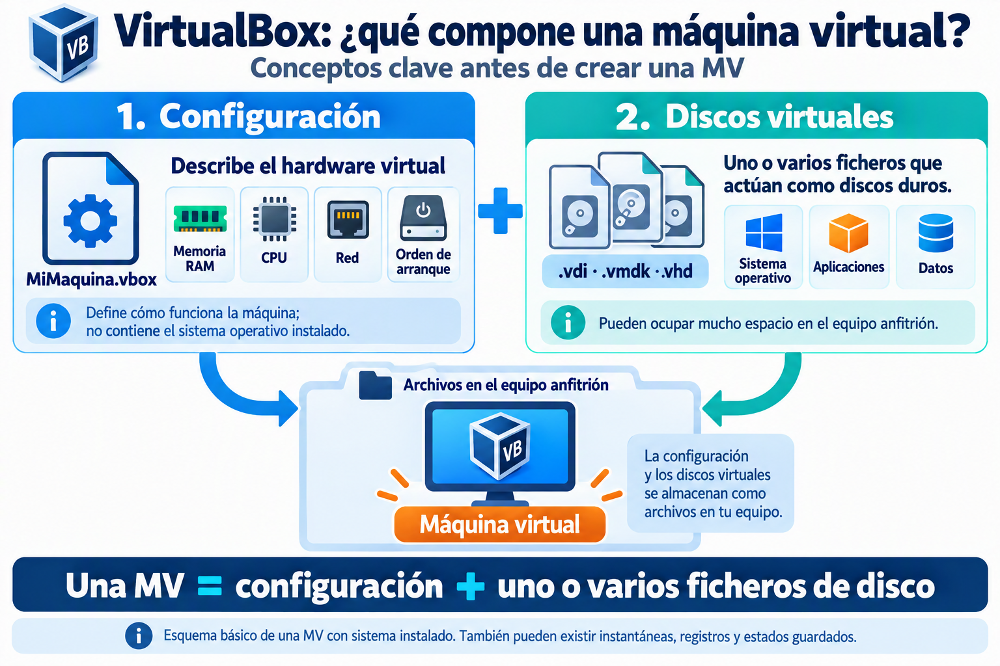
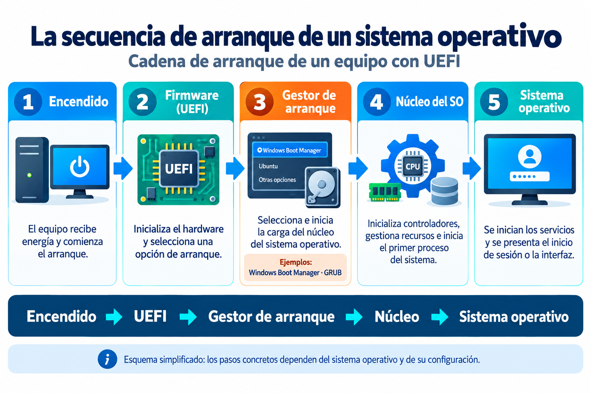

VirtualBox; instalación y primera máquina virtual
En el apartado anterior vimos qué es la virtualización y qué necesita tu equipo. Ahora toca ponerla en práctica con la herramienta que usaremos todo el curso: Oracle VirtualBox, un hipervisor de tipo 2 gratuito y multiplataforma.
Piensa en VirtualBox como en un taller donde construyes ordenadores a medida con piezas virtuales: eliges cuánta RAM, cuántos núcleos y qué disco tendrá, y después "enciendes" ese ordenador dentro de una ventana. Lo que decidas aquí condiciona todo lo que viene después, así que conviene hacerlo con criterio.


Instalación de VirtualBox
Antes de instalar
Comprueba lo visto en el apartado 3:
- [ ] La virtualización está activada en la BIOS/UEFI.
- [ ] Sabes cuánta RAM puedes asignar a una MV (RAM total menos ~4 GB de reserva).
- [ ] Hay espacio libre en disco: una MV de Windows 11 ocupa fácilmente 40-60 GB reales.
- [ ] Conoces si tienes Hyper-V/WSL2 activos (pueden ralentizar VirtualBox).
Instalación según el anfitrión
| Anfitrión | Cómo se instala |
|---|---|
| Windows | Descargar el instalador desde virtualbox.org y seguir el asistente. Acepta instalar los adaptadores de red virtuales (se corta la red unos segundos). |
| Debian / Ubuntu | Paquete .deb de la web oficial o repositorio de Oracle. El nombre del paquete depende de la versión (virtualbox-7.x). |
| macOS | Instalador .dmg. Fíjate en la arquitectura de tu equipo (ver aviso). |
Comprueba el paquete en Debian
No des por hecho que apt install virtualbox funcione en tu versión de Debian: la disponibilidad del paquete en los repositorios oficiales ha cambiado entre versiones. Consulta apt search virtualbox y, si no aparece, usa el .deb o el repositorio de Oracle. Verifícalo en vuestras máquinas del aula antes de la sesión.
Equipos con procesador ARM
VirtualBox 7.1 no ejecuta MV x86 sobre un anfitrión ARM. La 7.2 añade soporte para ARM sobre ARM, es decir, MV con sistemas ARM, no Windows x86 tradicional. Si tu portátil es ARM, consulta antes con el profesor.
En Linux, para poder usar los puertos USB y las carpetas compartidas, tu usuario debe pertenecer al grupo vboxusers:
Cierra sesión y vuelve a entrar para que el cambio tenga efecto.
Extension Pack y Guest Additions: no son lo mismo
Se confunden muchísimo, así que fíjate bien:
| Extension Pack | Guest Additions | |
|---|---|---|
| Se instala en | El anfitrión (host) | El invitado (guest) |
| Qué aporta | USB 2.0/3.0, cifrado de disco, otras funciones | Pantalla ajustable, portapapeles compartido, carpetas compartidas, mejor ratón |
| Licencia | PUEL (uso personal/educativo; restringido en empresa) | GPL |
| ¿Imprescindible? | No para este curso | Muy recomendable |
Licencias
Recuerda el caso del apartado 2: VirtualBox es GPL, pero el Extension Pack tiene licencia propia (PUEL). Para este módulo no lo necesitamos, así que no lo instalaremos salvo que la actividad lo pida.
Conceptos clave antes de crear una MV
Una máquina virtual en VirtualBox son, en realidad, dos cosas:
- Una configuración (fichero
.vbox): RAM, CPU, red, orden de arranque... - Uno o varios discos virtuales (
.vdi,.vmdk,.vhd): ficheros enormes que hacen de disco duro.


Dónde se guardan
Por defecto, en Carpeta personal/VirtualBox VMs. Si el disco del sistema va justo de espacio, cambia la carpeta predeterminada en Archivo → Preferencias → General antes de crear nada. Mover una MV después es posible, pero más incómodo.
Tipos de disco virtual
| Tipo de asignación | Qué hace | Cuándo usarlo |
|---|---|---|
| Reservado dinámicamente | El fichero crece según se usa | Lo normal: ahorra espacio |
| Tamaño fijo | Ocupa todo el espacio desde el principio | Algo más de rendimiento; solo si sobra disco |
El formato VDI es el nativo de VirtualBox; VMDK (VMware) y VHD/VHDX (Microsoft) permiten mover discos entre hipervisores.
Crear tu primera MV: Windows 11
Windows 11 es un buen primer reto porque exige requisitos que cualquier sistema moderno debería cumplir.
Requisitos mínimos de Windows 11
| Recurso | Mínimo de Microsoft | Recomendado para el aula |
|---|---|---|
| RAM | 4 GB | 4 GB (8 GB si el anfitrión lo permite) |
| CPU | 2 núcleos | 2 vCPU |
| Disco | 64 GB | 64 GB, dinámico |
| Firmware | UEFI con Secure Boot | EFI activado |
| Seguridad | TPM 2.0 | TPM 2.0 activado |
Por qué importan UEFI y TPM
- UEFI sustituye a la antigua BIOS: arranque más rápido, discos GPT de más de 2 TB y arranque seguro.
- Secure Boot impide arrancar gestores de arranque no firmados.
- TPM 2.0 es un chip de seguridad que guarda claves (lo usa BitLocker, por ejemplo). VirtualBox puede emular uno.
Paso a paso
- Pulsa Nueva. Pon nombre (p. ej.
W11-Cliente) y selecciona la ISO de Windows 11. - Si VirtualBox detecta la ISO, activará solo EFI y TPM. Comprueba que el tipo es Microsoft Windows y la versión Windows 11 (64-bit).
- Instalación desatendida: usuario y contraseña, y clave de producto si la tienes. Te ahorra el asistente de Windows, pero anota el usuario y la contraseña que pongas.
- Hardware: 4096 MB de RAM y 2 CPU. No pongas más RAM de la que puedas dedicar sin ahogar al anfitrión.
- Disco: 64 GB, reservado dinámicamente.
- Antes de arrancar, entra en Configuración y revisa:
- Sistema → Placa base: Habilitar EFI, Secure Boot y TPM 2.0.
- Sistema → Procesador: 2 CPU.
- Pantalla: memoria de vídeo al máximo.
- Arranca la MV y espera a que termine la instalación (varios reinicios).
Si el instalador dice «Este equipo no puede ejecutar Windows 11»
Casi siempre es EFI, TPM o RAM/CPU insuficientes. Revisa la configuración antes de buscar trucos que saltan los requisitos: en una instalación de empresa no tiene sentido saltarse las comprobaciones.
ISO de evaluación
Para el proyecto puedes usar ISO de evaluación de Microsoft (limitada en tiempo). Para la actividad vale cualquiera, pero no te dejes caducar una MV a medias.
Después de la instalación
- Instala las Guest Additions: Dispositivos → Insertar imagen de CD de las Guest Additions, ejecuta el instalador desde el explorador y reinicia.
- Comprueba que la resolución se ajusta a la ventana y que el portapapeles compartido funciona (si lo has activado).
- Ejecuta Windows Update y anota las actualizaciones instaladas (te servirá como evidencia en la actividad).
- Haz una instantánea del sistema recién instalado y limpio. La usaremos en el apartado 6.
Gestores de arranque
Hasta ahora has visto que "se enciende y aparece Windows". Entre medias ocurre algo importante: el firmware busca un gestor de arranque que sepa cargar el sistema operativo. Entenderlo es imprescindible para instalaciones con varios sistemas (dual boot) y para reparar un equipo que no arranca.
La secuencia de arranque


Los gestores que verás en el curso
| Gestor | Sistema | Particularidades |
|---|---|---|
Windows Boot Manager (bootmgr) |
Windows | Configuración en el almacén BCD. Edita con bcdedit. |
| GRUB 2 | Linux | Muestra un menú de sistemas. Configuración en /etc/default/grub; se regenera con update-grub (Debian/Ubuntu). |
UEFI frente a BIOS clásica
| BIOS (MBR) | UEFI (GPT) | |
|---|---|---|
| Tabla de particiones | MBR (máx. 2 TB, 4 primarias) | GPT (prácticamente sin límite) |
| Dónde está el gestor | Primer sector del disco | Partición ESP (FAT32) |
| Arranque seguro | No | Sí (Secure Boot) |
La ESP (EFI System Partition) es una pequeña partición FAT32 donde viven los gestores de arranque de todos los sistemas instalados.
Dual boot: dos sistemas en un mismo equipo
Cuando se instalan dos sistemas, el orden importa:
- Instalar primero Windows y luego Linux: GRUB detecta Windows y lo añade al menú. Es lo recomendable.
- Instalar Windows después de Linux: Windows sobrescribe el arranque y Linux "desaparece" del menú (no está borrado: hay que reparar GRUB).
En el aula
Nosotros no haremos dual boot sobre equipos físicos. Practicaremos el mismo concepto en MV: una MV con dos discos o con dos sistemas en particiones separadas. El enfoque es idéntico y sin riesgo de romper un equipo real.
Orden de arranque en VirtualBox
En Configuración → Sistema → Placa base puedes cambiar el orden: Óptica, Disco duro, Red. Cuando la instalación termina, deja el disco duro primero, o la MV volverá a arrancar el instalador cada vez. Con EFI, pulsa F2/Supr al arrancar para entrar en el menú de firmware.
Actividades en clase
Actividad 1: Crea tu MV con Windows 11
Crea una MV Windows 11 con 4 GB de RAM, 2 vCPU y 64 GB de disco dinámico. Entrega capturas de:
- Configuración de Placa base con EFI, Secure Boot y TPM activos.
- Windows instalado con Guest Additions (resolución ajustada).
- Información del sistema (
msinfo32) mostrando el modo de BIOS (UEFI) y el Arranque seguro. - Resultado de Windows Update.
Solución orientativa
- En
msinfo32aparecen Modo de BIOS: UEFI y Estado de arranque seguro: Activado. - Si ves Heredado (Legacy), la MV se creó sin EFI: hay que crearla de nuevo, porque cambiar de BIOS a EFI con el SO ya instalado no funciona sin reinstalar.
Actividad 2: Preguntas de análisis
- ¿Qué diferencia hay entre instalar el Extension Pack y las Guest Additions?
- Tu MV vuelve a mostrar el instalador tras terminar la instalación. ¿Qué ajuste revisas?
- Una MV de 64 GB dinámicos, ¿cuánto ocupa justo tras crearla? ¿Y tras instalar Windows?
- ¿Qué es la ESP y qué se guarda en ella?
- Instalas Windows en un equipo que ya tenía Ubuntu y desaparece el menú de arranque. ¿Qué ha pasado?
Solución
- El Extension Pack se instala en el anfitrión y añade funciones (USB 2/3, cifrado). Las Guest Additions se instalan en el invitado y mejoran pantalla, portapapeles y carpetas compartidas.
- El orden de arranque: hay que poner el disco duro antes que la unidad óptica (o quitar la ISO).
- Justo tras crearla, apenas unos KB/MB; tras instalar Windows, unos 20-30 GB reales, y crece con el uso.
- La EFI System Partition, una partición FAT32 con los gestores de arranque de los sistemas instalados.
- Windows ha sobrescrito la entrada de arranque y GRUB ya no es el primero. Linux sigue instalado: se repara reinstalando GRUB desde un medio live.
Resumen
- VirtualBox es un hipervisor tipo 2 gratuito; la MV son una configuración más sus discos.
- Extension Pack va en el anfitrión (licencia PUEL); Guest Additions van en el invitado.
- Windows 11 exige UEFI, Secure Boot, TPM 2.0, 4 GB de RAM y 64 GB de disco.
- Siempre: instalar Guest Additions, actualizar y hacer una instantánea limpia.
- El gestor de arranque (Boot Manager o GRUB) es el eslabón entre el firmware y el SO; en dual boot, primero Windows, después Linux.